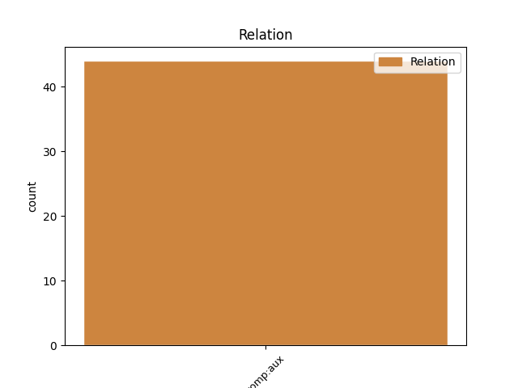
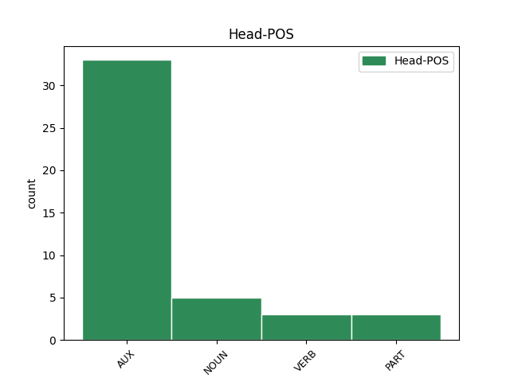
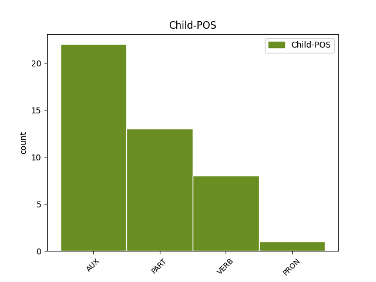

Distribution of features within this leaf



Agreement Rules sorted by frequency.
- When the dependent token is the complement for auxiliary(comp:aux) of the head token, and the head token is AUX and the dependent token is AUX.
1 E _ _ _ _ 0 _ _ _
2 ziskennidi _ _ _ _ 0 _ _ _
3 a avea AUX _ Number=Sing|Person=3 0 _ _ _
4 voe voe AUX _ Mood=Ind|Number=Sing|Person=3|Tense=Past|VerbForm=Fin 3 comp:aux _ _
5 anvet _ _ _ _ 0 _ _ _
6 Souvestre _ _ _ _ 0 _ _ _
7 , _ _ _ _ 0 _ _ _
8 Souestre _ _ _ _ 0 _ _ _
9 pe _ _ _ _ 0 _ _ _
10 Souêtre _ _ _ _ 0 _ _ _
11 . _ _ _ _ 0 _ _ _
1 Muntret _ _ _ _ 0 _ _ _
2 e e PART _ Mood=Ind|Number=Sing|Person=3|Polarity=Neg|VerbForm=Fin 3 comp:aux _ _
3 voe voe AUX _ Gender=Masc|Number=Sing|Person=3|Tense=Past 0 _ _ _
4 e _ _ _ _ 0 _ _ _
5 1757 _ _ _ _ 0 _ _ _
6 abalamour _ _ _ _ 0 _ _ _
7 ma _ _ _ _ 0 _ _ _
8 oa _ _ _ _ 0 _ _ _
9 un _ _ _ _ 0 _ _ _
10 tirant _ _ _ _ 0 _ _ _
11 anezhañ _ _ _ _ 0 _ _ _
12 . _ _ _ _ 0 _ _ _
1 Diouennet _ _ _ _ 0 _ _ _
2 e e PART _ Mood=Ind|Number=Sing|Person=3|Polarity=Neg|VerbForm=Fin 3 comp:aux _ _
3 voe voe NOUN _ Gender=Masc|Number=Sing|Person=3|Tense=Past 0 _ _ _
4 60 _ _ _ _ 0 _ _ _
5 % _ _ _ _ 0 _ _ _
6 an _ _ _ _ 0 _ _ _
7 organegoù _ _ _ _ 0 _ _ _
8 bev _ _ _ _ 0 _ _ _
9 e _ _ _ _ 0 _ _ _
10 - _ _ _ _ 0 _ _ _
11 pad _ _ _ _ 0 _ _ _
12 ar _ _ _ _ 0 _ _ _
13 maread _ _ _ _ 0 _ _ _
14 - _ _ _ _ 0 _ _ _
15 se _ _ _ _ 0 _ _ _
16 hag _ _ _ _ 0 _ _ _
17 eñ _ _ _ _ 0 _ _ _
18 n'eo _ _ _ _ 0 _ _ _
19 ket _ _ _ _ 0 _ _ _
20 sur _ _ _ _ 0 _ _ _
21 e _ _ _ _ 0 _ _ _
22 oa _ _ _ _ 0 _ _ _
23 ar _ _ _ _ 0 _ _ _
24 maread _ _ _ _ 0 _ _ _
25 - _ _ _ _ 0 _ _ _
26 skorn _ _ _ _ 0 _ _ _
27 an _ _ _ _ 0 _ _ _
28 abeg _ _ _ _ 0 _ _ _
29 nemetañ _ _ _ _ 0 _ _ _
30 . _ _ _ _ 0 _ _ _
1 Div _ _ _ _ 0 _ _ _
2 wech _ _ _ _ 0 _ _ _
3 all _ _ _ _ 0 _ _ _
4 ez _ _ _ _ 0 _ _ _
5 eas _ _ _ _ 0 _ _ _
6 Vasco _ _ _ _ 0 _ _ _
7 da _ _ _ _ 0 _ _ _
8 Gama _ _ _ _ 0 _ _ _
9 war wirþan VERB _ Mood=Ind|Number=Sing|Person=3|Tense=Past|VerbForm=Fin 10 comp:aux _ _
10 vor vor AUX _ Number=Plur|Person=3 0 _ _ _
11 betek _ _ _ _ 0 _ _ _
12 Indez _ _ _ _ 0 _ _ _
13 . _ _ _ _ 0 _ _ _
1 Kaset _ _ _ _ 0 _ _ _
2 e e PART _ Mood=Ind|Number=Sing|Person=3|Polarity=Neg|VerbForm=Fin 3 comp:aux _ _
3 voe voe VERB _ Gender=Masc|Number=Sing|Person=3|Tense=Past 0 _ _ _
4 Eduard _ _ _ _ 0 _ _ _
5 Shevardnadze _ _ _ _ 0 _ _ _
6 eus _ _ _ _ 0 _ _ _
7 ar _ _ _ _ 0 _ _ _
8 galloud _ _ _ _ 0 _ _ _
9 gant _ _ _ _ 0 _ _ _
10 Dipac'h _ _ _ _ 0 _ _ _
11 ar _ _ _ _ 0 _ _ _
12 Rozenn _ _ _ _ 0 _ _ _
13 e _ _ _ _ 0 _ _ _
14 2003 _ _ _ _ 0 _ _ _
15 goude _ _ _ _ 0 _ _ _
16 dilennadegoù _ _ _ _ 0 _ _ _
17 daelet _ _ _ _ 0 _ _ _
18 . _ _ _ _ 0 _ _ _
1 Pa _ _ _ _ 0 _ _ _
2 tistroas _ _ _ _ 0 _ _ _
3 en ei VERB _ Number=Sing|Person=1|Polarity=Neg|VerbForm=Fin|Voice=Act 0 _ _ _
4 em em AUX _ Aspect=Imp|Mood=Ind|Number=Sing|Person=1|Tense=Pres|Variant=Long|VerbForm=Fin 3 comp:aux _ _
5 lakaas _ _ _ _ 0 _ _ _
6 e _ _ _ _ 0 _ _ _
7 Akademiezh _ _ _ _ 0 _ _ _
8 al _ _ _ _ 0 _ _ _
9 lu _ _ _ _ 0 _ _ _
10 . _ _ _ _ 0 _ _ _
1 Un _ _ _ _ 0 _ _ _
2 adstêr _ _ _ _ 0 _ _ _
3 eo _ _ _ _ 0 _ _ _
4 d'ar _ _ _ _ 0 _ _ _
5 Saena _ _ _ _ 0 _ _ _
6 war _ _ _ _ 0 _ _ _
7 he _ _ _ _ 0 _ _ _
8 lez _ _ _ _ 0 _ _ _
9 kleiz _ _ _ _ 0 _ _ _
10 , _ _ _ _ 0 _ _ _
11 ha _ AUX _ Mood=Ind|Number=Sing|Person=3|Tense=Pres|VerbForm=Fin 0 _ _ _
12 roet _ _ _ _ 0 _ _ _
13 he _ PRON _ Case=Nom|Gender=Masc|Number=Sing|Person=3|PronType=Prs 11 comp:aux _ _
14 deus _ _ _ _ 0 _ _ _
15 hec'h _ _ _ _ 0 _ _ _
16 anv _ _ _ _ 0 _ _ _
17 d'an _ _ _ _ 0 _ _ _
18 departamant _ _ _ _ 0 _ _ _
19 gall _ _ _ _ 0 _ _ _
20 Yonne _ _ _ _ 0 _ _ _
21 . _ _ _ _ 0 _ _ _
Disagree Examples:
1 E _ _ _ _ 0 _ _ _
2 - _ _ _ _ 0 _ _ _
3 unan _ _ _ _ 0 _ _ _
4 e _ _ _ _ 0 _ _ _
5 voe voe VERB _ Gender=Masc|Number=Sing|Person=3|Tense=Past 0 _ _ _
6 met _ _ _ _ 0 _ _ _
7 e _ _ _ _ 0 _ _ _
8 1948 _ _ _ _ 0 _ _ _
9 en _ _ _ _ 0 _ _ _
10 doa doa AUX _ Number=Sing|Person=2 5 comp:aux _ _
11 savet _ _ _ _ 0 _ _ _
12 120.000 _ _ _ _ 0 _ _ _
13 fichenn _ _ _ _ 0 _ _ _
14 diwar _ _ _ _ 0 _ _ _
15 - _ _ _ _ 0 _ _ _
16 benn _ _ _ _ 0 _ _ _
17 ar _ _ _ _ 0 _ _ _
18 SSed _ _ _ _ 0 _ _ _
19 . _ _ _ _ 0 _ _ _
1 Un _ _ _ _ 0 _ _ _
2 uheliad _ _ _ _ 0 _ _ _
3 e _ _ _ _ 0 _ _ _
4 oa _ _ _ _ 0 _ _ _
5 , _ _ _ _ 0 _ _ _
6 ganet _ _ _ _ 0 _ _ _
7 e e PART _ Mood=Ind|Number=Sing|Person=3|Polarity=Neg|VerbForm=Fin 8 comp:aux _ _
8 oa oa AUX _ Number=Sing|Person=2 0 _ _ _
9 bet _ _ _ _ 0 _ _ _
10 e _ _ _ _ 0 _ _ _
11 Roma _ _ _ _ 0 _ _ _
12 . _ _ _ _ 0 _ _ _
1 Distrujet _ _ _ _ 0 _ _ _
2 e e AUX _ Mood=Ind|Number=Sing|Person=3|Polarity=Neg|VerbForm=Fin 3 comp:aux _ _
3 voe voe NOUN _ Mood=Ind|Number=Sing|Person=0|Tense=Past|VerbForm=Fin|Voice=Act 0 _ _ _
4 hag _ _ _ _ 0 _ _ _
5 ul _ _ _ _ 0 _ _ _
6 lec'h _ _ _ _ 0 _ _ _
7 enklask _ _ _ _ 0 _ _ _
8 eo _ _ _ _ 0 _ _ _
9 evit _ _ _ _ 0 _ _ _
10 an _ _ _ _ 0 _ _ _
11 hendraourion _ _ _ _ 0 _ _ _
12 . _ _ _ _ 0 _ _ _
1 Liesekoc'h _ _ _ _ 0 _ _ _
2 a a PART _ Number=Sing|Person=3 0 _ _ _
3 c'hell _ VERB _ Number=Sing|Person=2 2 comp:aux _ _
4 bezañ _ _ _ _ 0 _ _ _
5 o _ _ _ _ 0 _ _ _
6 liv _ _ _ _ 0 _ _ _
7 en _ _ _ _ 0 _ _ _
8 natur _ _ _ _ 0 _ _ _
9 . _ _ _ _ 0 _ _ _
1 Jedet _ _ _ _ 0 _ _ _
2 ez _ _ _ _ 0 _ _ _
3 eus _ _ _ _ 0 _ _ _
4 bet _ _ _ _ 0 _ _ _
5 dre _ _ _ _ 0 _ _ _
6 - _ _ _ _ 0 _ _ _
7 vras _ _ _ _ 0 _ _ _
8 e e PART _ Mood=Ind|Number=Sing|Person=3|Polarity=Neg|VerbForm=Fin 0 _ _ _
9 oa oa AUX _ Number=Sing|Person=2|Shared=Yes 8 comp:aux _ _
10 bet _ _ _ _ 0 _ _ _
11 kollet _ _ _ _ 0 _ _ _
12 18 _ _ _ _ 0 _ _ _
13 miliard _ _ _ _ 0 _ _ _
14 a _ _ _ _ 0 _ _ _
15 euroioù _ _ _ _ 0 _ _ _
16 evit _ _ _ _ 0 _ _ _
17 a _ _ _ _ 0 _ _ _
18 sell _ _ _ _ 0 _ _ _
19 amerzh _ _ _ _ 0 _ _ _
20 ar _ _ _ _ 0 _ _ _
21 vro _ _ _ _ 0 _ _ _
22 . _ _ _ _ 0 _ _ _